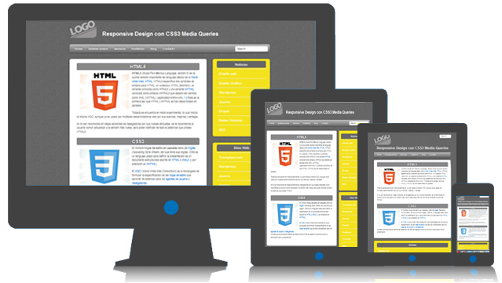

Tema de la Semana 3 : Estilos CSS y Diseño Responsivo
En esta sección se presenta CSS, esencial para el diseño web y la presentación visual. Se explica los diferentes tipos de estilos css. Además, se aborda la importancia de selectores, unidades de medida y herramientas como Flexbox y Grid para organizar elementos en filas y columnas.

ESTILOS Y DISEÑO RESPONSIVO
• HOJAS DE ESTILO: CSS, que significa Cascading Style Sheets (Hojas de Estilo en Cascada), es un lenguaje utilizado para la presentación del contenido de una página web, determinando su diseño y aspecto visual. Se aplica a cualquier etiqueta HTML para darle estilo:
o EN LA MISMA PÁGINA: Puede usarse directamente en una página web utilizando la etiqueta <style> en el encabezado. <style type="text/css"> Lista de estilos </style>
o EN UN ARCHIVO CSS: Puede usarse de manera externa mediante la etiqueta <link>, que referencia un archivo CSS externo. Esto permite una gestión eficiente y centralizada de los estilos para mejorar la consistencia y mantenimiento en el diseño de una página. <link rel="stylesheet" href="miweb.css" type="text/css">
o ESTILOS CON CLASS - ESTILOS REUTILIZABLES: CSS permite definir estilos reutilizables mediante clases. Se define una clase con propiedades de estilo, como .destacado {color: red; background:yellow;}. Luego, se aplica la clase a elementos HTML usando el atributo class. Por ejemplo,<p class="destacado">Un párrafo destacado</p>. Esto facilita la consistencia y reutilización de estilos.
o ESTILOS CON ID - ESTILOS NO REUTILIZABLES: Se definen utilizando el símbolo numeral (#) y un identificador correspondiente al atributo "id". #parrafo3 {color: red; background:yellow;} <P ID=“parrafo3”>Parrafo3 </P>
• SELECTORES: Desempeñan un papel crucial al definir sobre qué elementos se aplicarán las reglas de estilo. Estos pueden ser de varios tipos, como el selector de tipo para elementos específicos, el selector de clase para todos los elementos que comparten una clase, y el selector de ID para un elemento único. Además, existen selectores universales y de atributos para aplicar estilos de manera más general o específica. Combinadores como el de hermanos adyacentes, general de hermanos, hijo y descendientes permiten seleccionar elementos de manera más precisa, brindando flexibilidad en la aplicación de estilos a elementos HTML.
• UNIDADES DE MEDIDA: Las unidades de medida en CSS, expresadas como valores numéricos seguidos de una unidad, definen dimensiones y márgenes de elementos. Las unidades relativas, como em y rem, se ajustan al tamaño de fuente del padre o del documento root (html). Unidades como vw y vh son proporcionales al ancho y alto del viewport. En contraste, las unidades absolutas (px, cm, mm, in, pt, pc) ofrecen dimensiones fijas en píxeles, centímetros, milímetros, pulgadas, puntos y picas, respectivamente.
• FLEXBOX Y GRID: Ambos son herramientas de diseño CSS muy poderosas. Tanto Flexbox como Grid se fundamentan en el concepto de organizar elementos en filas y columnas, marcando un cambio significativo en la forma en que abordamos el diseño. La diferencia básica entre ambos es que Flexbox se creó para diseños de una dimensión, en una fila o una columna. En cambio CSS Grid Layout se pensó para el diseño bidimensional, en varias filas y columnas al mismo tiempo.
• PROCEDIMIENTOS: Durante la sesión, nos dedicamos a llevar a cabo un exhaustivo proceso de revisión de la bibliografía pertinente al tema que estamos abordando. Además, en Visual Studio Code practicamos los diseños responsivos con Flexbox y Grid.
• RESULTADOS: La creación de diseños responsivos utilizando HTML semántico y CSS, sin el uso de librerías externas, y aplicando tres técnicas distintas: Flexbox, Grid y Float.